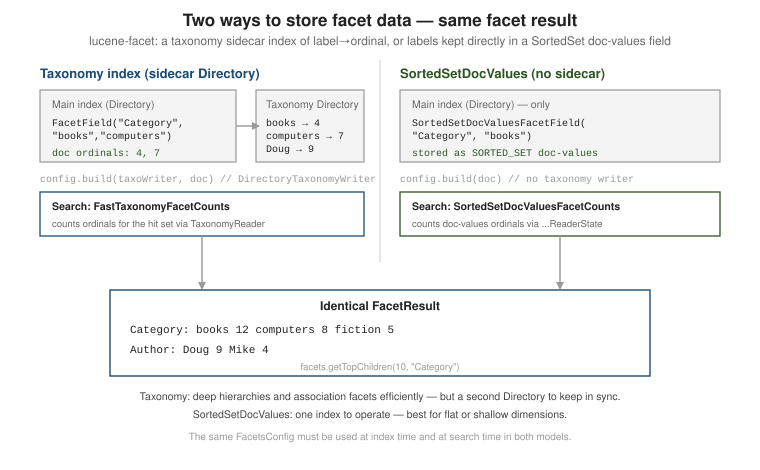

Filtering & faceting
|
This content was generated with the assistance of AI and should be verified against the official documentation before being relied on in production. |
Two related jobs live on this page: restricting a result set without affecting scores (a filter),
and turning a result set into grouped counts (a facet). Modern Lucene has no Filter class — a
filter is just a Query added with Occur.FILTER — and faceting is a separate lucene-facet
module built on doc-values or a sidecar taxonomy index.
Both halves use the book catalogue (ten books with a category hierarchy such as search/server, an
author, a format, a year and a price). Every output block is a real run against Lucene 10.4.0.
Filtering: Occur.FILTER, ConstantScoreQuery, TermInSetQuery
A clause added to a BooleanQuery with BooleanClause.Occur.FILTER must match, contributes nothing
to the score, and is eligible for caching in the LRUQueryCache of the IndexSearcher (on by default).
Pre-5.x code wrapped a Filter object around a query or passed it as a separate search argument;
that class is gone — express the same intent as a FILTER clause.
// https://lucene.apache.org/core/10_0_0/core/org/apache/lucene/search/BooleanClause.Occur.html
import org.apache.lucene.document.IntField;
import org.apache.lucene.index.Term;
import org.apache.lucene.search.*;
import org.apache.lucene.search.BooleanClause.Occur;
Query q = new BooleanQuery.Builder()
.add(new TermQuery(new Term("body", "java")), Occur.MUST) // scored
.add(new TermQuery(new Term("status", "published")), Occur.FILTER) // unscored, cacheable
.add(IntField.newRangeQuery("year", 2005, 2025), Occur.FILTER) // unscored, cacheable
.build();The printed form of the query marks the filter clauses with # instead of +, and the score is exactly
the score of the scored clause alone. Promoting the same status term to MUST changes the score,
because the clause then contributes its own idf:
filter query: +body:java #status:published #year:[2005 TO 2025]
0.5162 Head First Java
0.5162 Java Concurrency in Practice
0.4767 Effective Java
score with FILTER: 0.516205 without: 0.516205 as MUST: 0.5373505ConstantScoreQuery wraps any query so it runs as an unscored match with a fixed score of 1.0 — useful when a query must contribute a hit list to a scored SHOULD/MUST context but its own
relevance is irrelevant.
// https://lucene.apache.org/core/10_0_0/core/org/apache/lucene/search/ConstantScoreQuery.html
Query constant = new ConstantScoreQuery(
IntField.newRangeQuery("year", 2005, 2025)); // every hit scores 1.0TermInSetQuery matches a document whose field holds any of a set of terms — a single query
that is far cheaper than a BooleanQuery of many SHOULD TermQuery clauses when the set is
large. It scores as a constant and caches well as a FILTER.
// https://lucene.apache.org/core/10_0_0/core/org/apache/lucene/search/TermInSetQuery.html
import java.util.List;
import org.apache.lucene.util.BytesRef;
Query tags = new TermInSetQuery("tag",
List.of(new BytesRef("search"), new BytesRef("databases")));
// prints as tag:(databases search) and matches 6 of the 10 booksThe query cache
The searcher’s cache is a per-segment memo of "which documents matched this filter". It is configured
with IndexSearcher.setQueryCache / setQueryCachingPolicy; see
LRUQueryCache.
The defaults are deliberately conservative — only queries that are used repeatedly are cached, only
in segments with at least 10,000 documents (or 3% of the index), and a filter clause is skipped when it
is much more expensive than the clause leading the iteration — so a small test index never shows any
caching. To watch the mechanism, install a cache with relaxed thresholds:
LRUQueryCache cache = new LRUQueryCache(100, 10_000_000, ctx -> true, 1000f); // entries, bytes, which segments, skip factor
IndexSearcher cs = new IndexSearcher(reader);
cs.setQueryCache(cache);
cs.setQueryCachingPolicy(new QueryCachingPolicy() {
public void onUse(Query query) { }
public boolean shouldCache(Query query) { return true; }
});
for (int i = 0; i < 3; i++) cs.search(q, 10); // the query above, three times
System.out.println("hits=" + cache.getHitCount() + " misses=" + cache.getMissCount()
+ " cached=" + cache.getCacheCount() + " size=" + cache.getCacheSize());cache: hits=4 misses=2 cached=2 size=2Two filter clauses missed on the first run and were stored; the two repeat runs hit both, which is
four hits. Do not install a cache-everything policy in production — it caches one-off queries and
evicts the useful entries; keep the default UsageTrackingQueryCachingPolicy. The effect of a
well-used filter cache is described in
Performance tuning. For scored alternatives to a plain
filter (boosting rather than restricting), see
Function & custom scoring.
The lucene-facet module
lucene-facet computes facet counts as a second pass over the hits of a query. It needs a
FacetsConfig describing which dimensions are hierarchical, multi-valued, or stored with an
indexFieldName, and the same config must be used at index and search time.
<dependency>
<groupId>org.apache.lucene</groupId>
<artifactId>lucene-facet</artifactId>
<version>10.4.0</version>
</dependency>// https://lucene.apache.org/core/10_0_0/facet/org/apache/lucene/facet/FacetsConfig.html
import org.apache.lucene.facet.FacetsConfig;
FacetsConfig config = new FacetsConfig();
config.setHierarchical("Category", true);
config.setMultiValued("Author", true);
config.setIndexFieldName("Revenue", "$revenue"); // association dimension: its own field
config.setIndexFieldName("Rating", "$rating"); // SortedSetDocValues dimension: its own fieldThe facet values of every dimension that shares an indexFieldName are packed into one doc-values
field. By default that field is $facets, and its encoding depends on the kind of dimension, so a
field can only hold one kind. Mixing taxonomy and SortedSetDocValues dimensions, or an association
dimension with a plain one, under the default name fails when the second document is indexed:
IllegalArgumentException: Inconsistency of field data structures across documents for field [$facets] of doc [0].
doc values type: expected 'SORTED_NUMERIC', but it has 'SORTED_SET'.Giving each kind its own indexFieldName, as above, is the fix, and the same name must be passed to
the counting class at search time.
Collecting the hits for faceting
Facet counting needs the matching documents, which a FacetsCollector records. In current releases
the collector is created by a FacetsCollectorManager, which also makes the search concurrency-safe;
the static FacetsCollector.search(searcher, query, n, collector) helper of older releases no longer
exists:
// https://lucene.apache.org/core/10_0_0/facet/org/apache/lucene/facet/FacetsCollectorManager.html
FacetsCollector fc = searcher.search(new MatchAllDocsQuery(), new FacetsCollectorManager());
// when you also want the top documents:
FacetsCollectorManager.FacetsResult both =
FacetsCollectorManager.search(searcher, query, 10, new FacetsCollectorManager());
TopDocs top = both.topDocs();
FacetsCollector fc2 = both.facetsCollector();new FacetsCollectorManager(true) also keeps scores, which a facet computed from the score needs.
Taxonomy index vs. SortedSetDocValues
There are two storage strategies for facet fields, and the choice is made per dimension and index:

Taxonomy index — a second Directory written by DirectoryTaxonomyWriter maps each facet label
to an ordinal; FacetsConfig.build adds the ordinals to each document, and
FastTaxonomyFacetCounts counts them at search time via a TaxonomyReader. It supports deep
hierarchies and association facets efficiently, at the cost of maintaining the sidecar directory
alongside the main index.
// https://lucene.apache.org/core/10_0_0/facet/org/apache/lucene/facet/taxonomy/FastTaxonomyFacetCounts.html
import org.apache.lucene.facet.*;
import org.apache.lucene.facet.taxonomy.*;
import org.apache.lucene.facet.taxonomy.directory.DirectoryTaxonomyWriter;
import org.apache.lucene.facet.taxonomy.directory.DirectoryTaxonomyReader;
// indexing
try (DirectoryTaxonomyWriter taxoWriter = new DirectoryTaxonomyWriter(taxoDir)) {
Document doc = new Document();
doc.add(new FacetField("Category", "search", "server")); // path: search / server
doc.add(new FacetField("Author", "Radu Gheorghe"));
indexWriter.addDocument(config.build(taxoWriter, doc));
} // close() commits the taxonomy; commit the IndexWriter at the same point
// searching
TaxonomyReader taxoReader = new DirectoryTaxonomyReader(taxoDir);
FacetsCollector fc = searcher.search(new MatchAllDocsQuery(), new FacetsCollectorManager());
Facets facets = new FastTaxonomyFacetCounts(taxoReader, config, fc);
FacetResult top = facets.getTopChildren(10, "Category");
FacetResult sub = facets.getTopChildren(10, "Category", "search"); // drill into one branch
Number one = facets.getSpecificValue("Category", "search", "server");Category (top): dim=Category path=[] value=10 childCount=3
programming (4)
search (4)
databases (2)
Category/search: dim=Category path=[search] value=4 childCount=3
server (2)
library (1)
theory (1)
Author: dim=Author path=[] value=-1 childCount=10
Joshua Bloch (1)
Michael McCandless (1)
Trey Grainger (1)A hierarchical dimension reports its own total (value=10); a multi-valued flat dimension such as
Author reports value=-1 because the sum of its children is not the number of documents (a book
can have several authors). The taxonomy index is append-only metadata that must stay in step with the
main index: open the TaxonomyReader after the writers have committed, and reopen it
(TaxonomyReader.openIfChanged) together with the DirectoryReader.
SortedSetDocValues — SortedSetDocValuesFacetField stores the labels directly as a doc-values
field, and SortedSetDocValuesFacetCounts counts them with no sidecar index. Simpler to operate; best
for flat or shallow dimensions.
// https://lucene.apache.org/core/10_0_0/facet/org/apache/lucene/facet/sortedset/SortedSetDocValuesFacetCounts.html
import org.apache.lucene.facet.sortedset.*;
// indexing -- no taxonomy writer
doc.add(new SortedSetDocValuesFacetField("Rating", "stars-5"));
indexWriter.addDocument(config.build(doc));
// searching: the reader state names the index field that the dimension was given
SortedSetDocValuesReaderState state =
new DefaultSortedSetDocValuesReaderState(reader, "$rating", config);
Facets facets = new SortedSetDocValuesFacetCounts(state, fc);SSDV Rating: dim=Rating path=[] value=10 childCount=2
stars-5 (6)
stars-4 (4)The reader state caches the global ordinal mapping, so create it once per reader (it is rebuilt when
the index changes) rather than per query. ConcurrentSortedSetDocValuesFacetCounts counts in parallel
when an executor is available.
Value and range facets
LongValueFacetCounts buckets by the exact value of a NumericDocValuesField /
SortedNumericDocValuesField — one bucket per distinct number, no config entry needed.
LongRangeFacetCounts and DoubleRangeFacetCounts count into explicit LongRange / DoubleRange
bands defined at query time (the counterpart of a Solr facet.range or an Elasticsearch range
aggregation).
// https://lucene.apache.org/core/10_0_0/facet/org/apache/lucene/facet/range/LongRangeFacetCounts.html
import org.apache.lucene.facet.range.*;
import org.apache.lucene.facet.LongValueFacetCounts;
Facets exact = new LongValueFacetCounts("yearNum", fc);
LongRange[] decades = {
new LongRange("1990s", 1990, true, 1999, true),
new LongRange("2000s", 2000, true, 2009, true),
new LongRange("2010s", 2010, true, 2019, true),
};
Facets ranges = new LongRangeFacetCounts("yearNum", fc, decades);
FacetResult byDecade = ranges.getTopChildren(10, "yearNum");ranges: dim=yearNum path=[] value=10 childCount=3
2010s (6)
2000s (3)
1990s (1)These two classes read a doc-values field by name, so the field must exist as numeric doc values; an
IntField named year works, because it carries a SortedNumericDocValuesField of the same name.
The ranges overlap freely (a document is counted in every range that contains it) and need no
index-time declaration, which is what makes them the cheap way to add a price or date histogram.
Drill-down and drill-sideways
DrillDownQuery adds one or more facet-value constraints onto a base query — the click-through of
a faceted UI. DrillSideways runs the base query plus, for each drill-down dimension, a variant
that omits that one constraint, so every facet still shows counts for the values the user did not
pick (multi-select faceting).
// https://lucene.apache.org/core/10_0_0/facet/org/apache/lucene/facet/DrillSideways.html
import org.apache.lucene.facet.DrillDownQuery;
import org.apache.lucene.facet.DrillSideways;
DrillDownQuery ddq = new DrillDownQuery(config, new MatchAllDocsQuery());
ddq.add("Category", "search");
ddq.add("Format", "ebook");
DrillSideways ds = new DrillSideways(searcher, config, taxoReader);
DrillSideways.DrillSidewaysResult r = ds.search(ddq, 10);
// r.hits -> the books in Category=search AND Format=ebook
// r.facets -> counts where each dimension ignores its own drill-downOn the catalogue (the formats paper, ebook and audio are assigned round-robin) the user has
picked Category=search and Format=ebook. A plain drill-down shows only what is left; drill-sideways
shows the alternatives:
drill-sideways hits: 1
Category counts (ignores own constraint): programming (2), search (1)
Format counts (ignores own constraint): paper (2), ebook (1), audio (1)
plain drill-down Category: search (1)
plain drill-down Format : ebook (1)Category shows how many ebooks exist in each category (2 programming, 1 search), and Format shows how many search books exist in each format (2 paper, 1 ebook, 1 audio) — exactly the counts needed to let the user switch a selection instead of only narrowing it.
Association facets
Instead of counting occurrences, association facets aggregate a per-document numeric payload
attached to a facet label: IntAssociationFacetField / FloatAssociationFacetField at index time,
TaxonomyFacetIntAssociations / TaxonomyFacetFloatAssociations with a AssociationAggregationFunction
(SUM, MAX) at search time — e.g. total revenue per category rather than document count. The
dimension needs its own indexFieldName (see above) and that name is the first argument of the
aggregating constructor.
// https://lucene.apache.org/core/10_0_0/facet/org/apache/lucene/facet/taxonomy/TaxonomyFacetFloatAssociations.html
import org.apache.lucene.facet.taxonomy.*;
// revenue = price x units sold, attached to the category label
doc.add(new FloatAssociationFacetField((float) (price * popularity), "Revenue", "programming"));
// ... at search time:
Facets revenue = new TaxonomyFacetFloatAssociations(
"$revenue", taxoReader, config, fc, AssociationAggregationFunction.SUM);Revenue (SUM): dim=Revenue path=[] value=290450.0 childCount=3
programming (131850.0)
search (84300.0)
databases (74300.0)
Revenue (MAX): dim=Revenue path=[] value=54000.0 childCount=3
databases (54000.0)
programming (42750.0)
search (35000.0)SUM totals the revenue of every book in the category; MAX reports the best single title in it.
See the
lucene-facet
package Javadoc for the full type list.
Choosing a facet strategy
| Taxonomy | SortedSetDocValues | |
|---|---|---|
Extra index |
A second |
None |
Hierarchy |
Deep, with a count at every level |
Flat or a shallow path |
Association payloads |
Yes |
No |
Cardinality |
Millions of distinct labels are fine |
Ordinal map built per reader; very high cardinality costs refresh time |
Operational risk |
Taxonomy and main index must stay consistent |
Nothing to keep consistent |